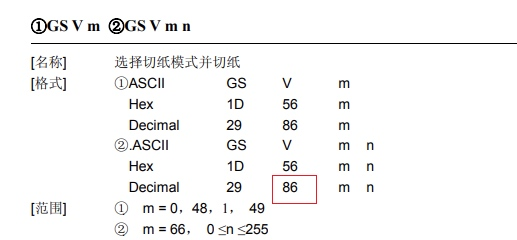
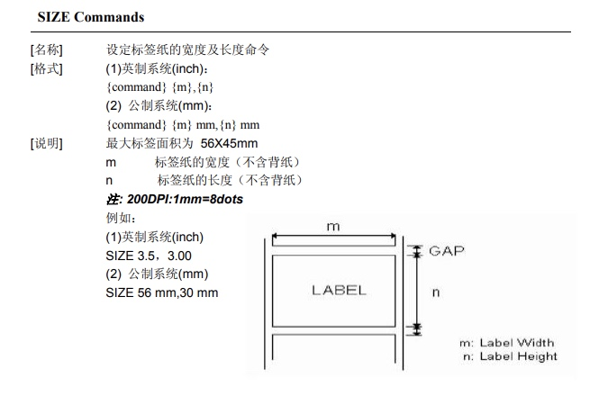

网络打印走的socket连接，主流的java, php, c, c#等语言都支持socket，所以实现打印机的网络打印几乎是和语言无关的
打印机默认端口是9100
使用socket连接上打印机后，将打印内容按照打印机的指令进行编码后调用send就可以打印了
协议文档
小票打印机和标签打印机走的协议不同，所以各自都有一个协议，小票打印机使用的是esc协议，标签打印机使用的是tsc/tspl协议
小票打印机esc协议文档：
- http://sprinter.com.cn/img/up/data/1492073298104phpDo100.pdf
- https://blog.csdn.net/feng88724/article/details/17474351
- http://www.sprt.cc/img/up/data/1499134995151phpDo100.pdf
标签打印机tsc/tspl协议文档：
可以看到打印机支持的指令非常多，下面找到常用的指令实现我们的打印目的
小票打印机
小票打印机已经有java驱动了，参考：https://github.com/SubLuLu/thermal_printer
小票打印机指令使用10进制表示了，所以难以阅读，指令对应的意思请对照文档
核心代码如下
连接打印机
public NetEscPos(String ip, int port, String encoding) throws IOException {
Socket socket = new Socket(ip, port);
socketOut = socket.getOutputStream();
socket.isClosed();
NetEscPos.encoding = encoding;
writer = new OutputStreamWriter(socketOut, encoding);
}
发送命令，比如发送切纸命令
private NetEscPos feedAndCut() throws IOException {
writer.write(0x1D);
writer.write(86);
writer.write(65);
writer.write(0);
writer.flush();
return this;
}
对应的文档为

查看打印效果
标签打印机
参考实现：https://github.com/fintrace/tspl2-driver
核心指令如下
SIZE 40 mm, 30 mm
SPEED 5
DENSITY 7
DIRECTION 1
REFERENCE 0,0
OFFSET 0 mm
SHIFT 0
CLS
TEXT 20,60,"TSS24.BF2",0,2,2,"堂食 0001"
TEXT 20,120,"TSS24.BF2",0,1,1,"2019-03-22 10:05:51"
TEXT 20,150,"TSS24.BF2",0,1,1,"大鸡腿(1/3)"
TEXT 20,180,"TSS24.BF2",0,1,1,"加冰 标签备注"
PRINT 1
查看打印效果:
对应的指令可以参考文档，比如第一行设置标签纸宽度和长度的SIZE指令

一些注意的点
可以使用redis的阻塞队列实现获取是否打印成功的状态，参考：基于List的 LPUSH+BRPOP 的实现
字符集需要设置成 gb2312
目前几乎所有的网络打印机都遵守这个打印协议，一般是可以通用的🎉
使用点阵图可以打印更清晰的图片
java参考：EscPos.java#L501
c#参考：https://blog.csdn.net/xiaoxian8023/article/details/8440625
核心代码如下
// 每行进行打印
for (int i = 0; i < bufImage.getHeight() / 24 + 1; i++) {
write(escBmp);
for (int j = 0; j < bufImage.getWidth(); j++) {
for (int k = 0; k < 24; k++) {
if (((i * 24) + k) < bufImage.getHeight()) {
pixelColor = bufImage.getRGB(j, (i * 24) + k);
if (pixelColor != -1) {
data[k / 8] += (byte) (128 >> (k % 8));
}
}
}
write(data);
// 重置参数
data[0] = (byte) 0x00;
data[1] = (byte) 0x00;
data[2] = (byte) 0x00;
}
//换行
byte[] byteSend1 = new byte[2];
byteSend1[0] = 0x0d;
byteSend1[1] = 0x0a;
write(byteSend1);
}
c#版如下
// data
for (int i = 0; i < (bmp.Height / 24) + 1; i++)
{
socket.Send(escBmp, escBmp.Length, 0);
for (int j = 0; j < bmp.Width; j++)
{
for (int k = 0; k < 24; k++)
{
if (((i * 24) + k) < bmp.Height) // if within the BMP size
{
pixelColor = bmp.GetPixel(j, (i * 24) + k);
if (pixelColor.R == 0)
{
data[k / 8] += (byte)(128 >> (k % 8));
}
}
}
socket.Send(data, 3, 0);
data[0] = (byte)'\x00';
data[1] = (byte)'\x00';
data[2] = (byte)'\x00'; // Clear to Zero.
}
byte_send = Encoding.GetEncoding("gb18030").GetBytes("\n");
//发送测试信息
socket.Send(byte_send, byte_send.Length, 0);
} // data
如果在编写驱动过程中遇到问题，可加作者微信探讨